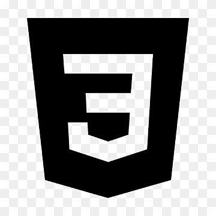

Hi, I am Yash
and I am a passionate
Past Experience

C++ Language
In my initial university semester, I acquired a foundational
understanding of the C language through the 'Introduction to C
Language' course. Additionally, I developed substantial expertise
in C++, which I now prefer for problem-solving in data structure
and algorithms (DSA).

HTML Developing
Fueled by an interest in web development, I initiated my learning
journey with HTML through online resources. Acquired comprehensive
knowledge of various HTML tags and their functionalities, enabling
the creation of a fundamental website structure.

CSS Styling
After acquiring proficiency in HTML, I furthered my skills in CSS
through online resources. Explored diverse creative styling
techniques and gained insights into website design. Additionally,
developed fully-functional websites and clones, showcasing
comprehensive frontend expertise in various projects.

Java script
To advance my expertise in web development, I mastered the
fundamental functions of JavaScript. Applied JavaScript
proficiently, garnering valuable experience in designing fully
functional and interactive websites with meticulous attention to
both frontend and backend aspects.

React JS
Recognizing React as a valuable tool for web development, I
actively pursued hands-on experience. Initiated learning through
online resources, completing couple of projects. Continuously
expanding my knowledge, exploring new facets of React daily.